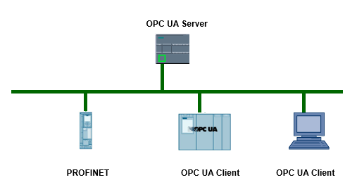

标准 OPC 仅支持 Windows 操作系统。为了应对这一限制条件，OPC Foundation 研发出了 OPC UA（OPC 统一架构）标准。
OPC UA 标准并不特定于某个平台，并且针对高性能应用使用优化的基于 TCP 的二进制协议。
OPC UA 支持诸如 Window、Linux、Apple OS X、实时操作系统或移动操作系统（Android 或 iOS）。
OPC UA 目前支持以下传输机制和协议：
S7-1200 基本控制器支持"Micro Embedded Device 2017 Server Profile"。
由于 OPC UA 标准独立于特定的操作系统，并采用安全传送机制和数据语义描述，因此尤其适合于跨层级的数据交换。机器数据（受控变量，测量值或参数）也可采用这种方式传输。
OPC UA 采用简单的客户端/服务器的机制进行通信。服务器可在网络中提供大量信息，如有关 CPU、OPC UA 服务器、数据和数据类型的信息。OPC UA 客户端访问这些信息。
OPC UA 通信常用的有以下功能：
服务器：
S7-1200 CPU 固件版本 V4.4 及以上版本均配备 OPC UA 服务器，除了标准的 S7-1200 CPU 外，还包括 S7-1200F 系列 CPU。
固件版本 V4.5 开始支持结构化数据类型（结构和数组）、诊断功能。
客户端：
S7-1200 CPU 目前不支持，具体信息可以参考表 1 描述。
表 1.S7-1200 OPC UA 各版本兼容性| S7-1200 以及 TIA Portal 最低版本 | ||
| 服务器 | 浏览 | V4.4/TIA V16 |
| 读/写 | V4.4/TIA V16 | |
| 注册读/写 | - | |
| 订阅 | V4.4/TIA V16 | |
| 方法 | V4.5/TIA V17 | |
| 伴随规范 | V4.4/TIA V16 | |
| 诊断 | V4.5/TIA V17 | |
| 客户端 | 浏览 | - |
| 注册读/写 | ||
| 方法 | ||
S7-1200 OPC UA 的性能参数，以固件版本 V4.5 为例，参考表 2 内容。
表 2.S7-1200 OPC UA 性能参数| S7-1200 | |
| 最大会话数 | 10（V4.4 为 5） |
| 最大访问变量数 | 2000（V4.4 为 1000） |
| 最大会话订阅数 | 50（V4.4 为 5） |
| 最小采样间隔 | 100ms |
| 最小发布间隔 | 200ms |
| 最大服务器接口数 | 2 |
| 最大监视项 | 1000（V4.4 为 500） |